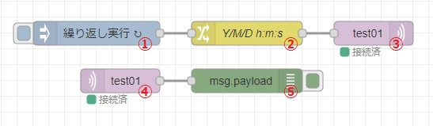
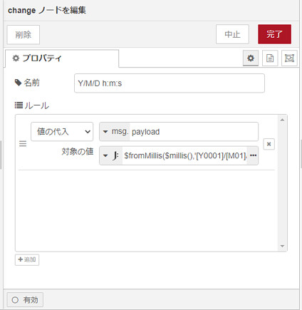

今回はNode-REDとスマホ間でデータのやり取りを行います。
MQTTプロトコルは、パブリッシュ/サブスクライブ型の軽量なメッセージングを提供します。低消費電力・低帯域幅なネットワーク向けのプロトコルです。 まさにIoT向けです。
Node-RED <=> MQTTブローカー(中継サーバー) <=> スマホ
という感じでやり取りを行います。OSはWindows10 64ビットを例に手順を書きます。
環境構築の手順
Node-REDはデフォルトで、MQTTブローカーと接続できるノードがありますので、特に準備は必要ありません。
スマホには「IoT MQTT Panel」や「MQTT Dash」などのアプリがあります。今回は「IoT MQTT Panel」を使います。Playストアからインストールします。
MQTTブローカーには「Eclipse Mosquitto」を使います。
ダウンロードは扱いやすい1.6系を使います。こちらから最新のものをダウンロードし、インストールてください。
2.0系以降、デフォルトではローカルホストからのアクセスのみを許可しています。外部PCからのアクセスを許可するには、構成ファイルの編集やパスワードの設定が必要です。
1.6系は何の設定も必要ありません。サービスの登録も自動的にやってくれます。
インストール後、再起動してください。
これで環境構築は完了です。
ちなみに、MQTTブローカーへのアクセスをユーザー名とパスワードによって制限するようにしたい場合、こちらを参考にしてください。
サンプルフロー
Node-REDからは「日時分秒」をMQTTブローカーに送信します。
スマホは「日時分秒」を受信します。
Node-RED側
こんな感じでフローを作成します。

- ①「inject」ノード
- ・繰り返しメッセージを送信するためにトリガーをかける役割のノードとなります。

- ②「switch」ノード
- ・日時の数値を「Y/M/D h:m:s」の形式に変換します。
- ・JSONate式
$fromMillis($millis(), '[Y0001]/[M01]/[D01] [H01]:[m01]:[s01]')を入力してください。 - ・
$millis()は協定世界時(UTC)です。日本はUTC+9時間です。つまり、$millis() + 32400000で日本標準時となります。 - ・[H01]で24時間制、[h01]で12時間制の表示になります。こちらと同じ構文です。
- 
- ③「mqtt out」ノード
- ・鉛筆アイコンをクリックして接続設定を行います。
- ・「トピック」はメッセージを保管するポストのようなものです。今回の例では「test01」とします。
- ・「Quality of Service (QoS) 」はサービスの品質を表します。0→2で処理速度は遅くなります。※1
- ・「保持」はブローカーにメッセージを保持するかしないかの設定をします。
- ④「mqtt in」ノード
- ・③で設定した接続設定／トピック／QoSを使います。
- ・変化があれば受信します。
- ⑤「debug」ノード
- ・受信した文字列を表示します。
- ・今回はうまく送信できているかを確認するためのノードになります。
※1
| QoS | 意味 | 確認応答 | メッセージの再送 | メッセージの重複 |
|---|---|---|---|---|
| 0 | At Most Once 最大1回 | なし | なし | なし |
| 1 | At Least Once 少なくとも1回 | あり | あり | あり |
| 2 | Exactly Once 正確に1回 | あり | あり | なし |
スマホ側
上から順番に設定します。
1秒ごとに「日時分秒」が更新されます。